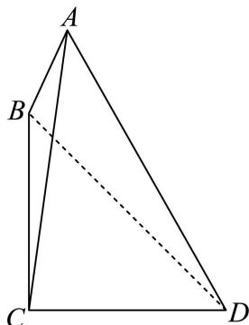
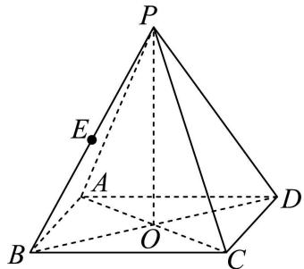

01 【来源：24秋考·1】
查看所属专题设全集 ，集合 ，则 ______。
作答区
整卷阅读 · 学生版 · 21 题
按来源题号排列；内容来自分类汇编，仍需回源核对。
没有找到匹配题目。
设全集 ，集合 ，则 ______。
已知 则 ______。
已知 ，则不等式 的解集为______。
已知 ，，，且 ，则 的值为______。
已知 为奇函数，则 ______。
在 的二项展开式中，若各项系数和为 32，则 项的系数为______。
已知抛物线 上有一点 到准线的距离为 9，那么点 到 轴的距离为______。
某校举办科学竞技比赛，有 三种题库， 题库有 5000 道题， 题库有 4000 道题， 题库有 3000 道题。小申已完成所有题，他 题库的正确率是 0.92， 题库的正确率是 0.86， 题库的正确率是 0.72。现他从所有的题中随机选一题，正确率是______。
已知虚数 ，其实部为 1，且 ，则实数 为______。
设集合 中的元素皆为无重复数字的三位正整数，且元素中任意两者之积皆为偶数，则集合中元素个数的最大值为______。
如图，某海域内有一小岛 ，观测点 分别在小岛 的正北方向和正东方向，且 ，观测到海域内有一小船 满足 ，，则 ______。（精确到 ）

无穷等比数列 满足首项 ，，记 ，若对任意正整数 ，集合 是闭区间，则 的取值范围是______。
已知气候温度和海水表层温度相关，且相关系数为正数，对此描述正确的是（ ）。
A. 气候温度高，海水表层温度就高；
B. 气候温度高，海水表层温度就低；
C. 随着气候温度由低到高，海水表层温度呈上升趋势；
D. 随着气候温度由低到高，海水表层温度呈下降趋势。
下列函数 的最小正周期是 的是（ ）。
A.
B.
C.
D.
定义一个集合 ，集合中的元素是空间内的点集，任取 ，存在不全为 0 的实数 ，使得 。已知 ，则 的充分条件是（ ）。
A.
B.
C.
D.
已知函数 的定义域为 ，定义集合 ，在使得 的所有 中，下列成立的是（ ）。
A. 存在 是偶函数；
B. 存在 在 处取最大值；
C. 存在 是严格增函数；
D. 存在 在 处取到极小值。
若 。
（1）（5 分） 过 ，求 的解集；
（2）（9 分）存在 使得 成等差数列，求 的取值范围。
如图为正四棱锥 ， 为底面 的中心。

（1）（5 分）若 ，，求 绕 旋转一周形成的几何体的体积；
（2）（9 分）若 ， 为 的中点，求直线 与平面 所成角的大小。
为了解某地初中学生体育锻炼时长与学业成绩的关系，从该地区 29000 名学生中抽取 580 人，得到日均体育锻炼时长与学业成绩的数据如下表所示：
| 学业成绩／时间范围（小时） | |||||
|---|---|---|---|---|---|
| 优秀 | 5 | 44 | 42 | 3 | 1 |
| 不优秀 | 134 | 147 | 137 | 40 | 27 |
（1）（4 分）该地区 29000 名学生中体育锻炼时长不少于 1 小时人数约为多少？
（2）（4 分）估计该地区初中学生日均体育锻炼的时长（精确到 0.1）；
（3）（6 分）是否有 95% 的把握认为学业成绩优秀与日均体育锻炼时长不小于 1 小时且小于 2 小时有关？
附：，其中 ，。
已知双曲线 ，左右顶点分别为 ，过点 的直线 交双曲线 于 两点。
（1）（3 分）若离心率 时，求 的值；
（2）（5 分）若 ， 为等腰三角形，且点 在第一象限，求点 的坐标；
（3）（10 分）连接 并延长，交双曲线 于点 ，若 ，求 的取值范围。
对于一个函数 和一个点 ，令 ，若 是 取到最小值的点，则称 是 在 的“最近点”。
（1）（3 分）对于 ，求证：对于点 ，存在点 ，使得点 是 在 的“最近点”；
（2）（5 分）对于 ，，请判断是否存在一个点 ，它是 在 的“最近点”，且直线 与 在点 处的切线垂直；
（3）（10 分）已知 在定义域 上存在导函数 ，且函数 在定义域 上恒正，设点 ，。若对任意的 ，存在点 同时是 在 的“最近点”，试判断 的单调性。